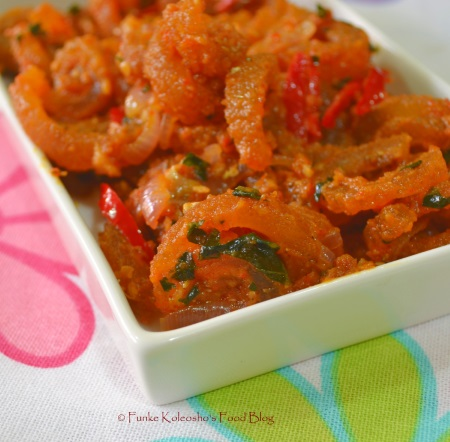

My Favourite Food
I love eating African continental dishes. Most especially my most favourite traditional food is Owo soup and starch. This is the major food eating by South-South part of Nigeria, which are the Urhobo people food. This meal is serve during any traditional marriage among the Urhobos. It look appealing at look and very sweet when eaten.